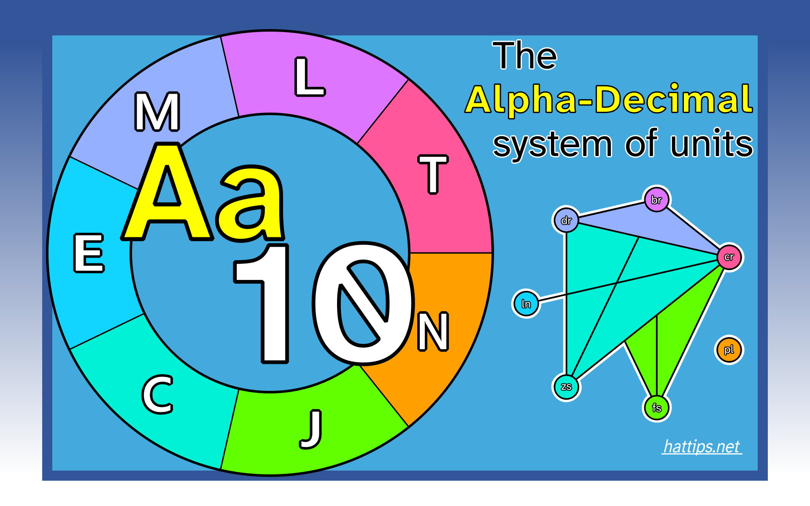

The Alpha-Decimal system of units
originally uploaded 2025-April-7
[Introduction]
Defining the units
Description of the units is given, for each one, as a product of the defining the constants and a set of scaling (An) factors.
\begin{align*} 1\ \text{cr} &= A_1\ \frac{1}{\Delta v_{Cs}} \tag{1}\label{eq1} \\ 1\ \text{br} &= \frac{A_1}{A_2}\ \frac{c}{\Delta v_{Cs}} \tag{2}\label{eq2} \\ 1\ \text{nt} &= \frac{1}{A_3}\ \tau \tag{3}\label{eq3} \\ 1\ \text{dr} &= \frac{A_2^2}{A_1 A_3 A_4}\ \frac{\Delta v_{Cs}\ \tau\ \hbar}{c^2} \tag{4}\label{eq4} \\ 1\ \text{lc} &= \frac{1}{A_5}\ q_e \tag{5}\label{eq5} \\ 1\ \text{zs} &= \frac{A_6}{A_1 A_3 A_4}\ \frac{\Delta v_{Cs}\ \tau\ \hbar}{k_B} \tag{6}\label{eq6} \\ 1\ \text{pl} &= A_7\ \frac{1}{N_A} \tag{7}\label{eq7} \\ 1\ \text{fs} &= \frac{A_3}{A_1^2 A_4 A_8}\ \frac{(\Delta v_{Cs})^{2}\ \hbar\ K_{HV}}{\tau} \tag{8}\label{eq8} \end{align*}Each A-factor corresponding to the numerical value of one specific constant as show in table 1.
Table 1. Numeric values of scaling A-factors and defining constant.| Scaling factor's name | A1 | A2 | A3 | A4 | A5 | A6 | A7 | A8 |
|---|---|---|---|---|---|---|---|---|
| Corresponding constant | ΔvCs | c | τ | ℏ | qe | kB | NA | KHV |
| Numeric value a | 3.971 216 960 × 109 | 108 | 2π | 10−34 | 10−18 | 10−24 | 2 × 1024 | 103 |
- The scaling (An) factors are dimensionless while the constants have units (which can be infered from equations 1 to 8).
Comparing this system of units with the definition of SI units as listed in the SI-brochure (9th edition, version 3.02 as of October 2025) the conversion factors
OLD TEXT
v2Units are a tool for communication. Just like words, they are relevant in everyday life. When it comes to language, different interpretations of the same words result in the art of writing. Units, however, demand precision by their very nature. This requirement has led to a century's long journey of refining standards for the rigorous exchange of information.
A process that culminated in the current realisation of the International System (the SI). Since its creation, countless people have worked together to refine the metric system using cutting-edge technology for it to be useful for anyone at any time, transcending all fields and applications. Now, it is ubiquitous in modern society and, perhaps, one of the most successful standards ever written.
It may be perplexing to learn, then, the common use of units outside and even conflicting with the SI in academia. But many of these serve one purpose, to give fundamental constants convenient values.
Our current models of the universe show constant figures shaping our universe. While the SI is defined with them, a compromise is made to preserve the size of the units at the cost of awkward numeric values given to the defining constants.
Natural units were created prioritising numeric constants. They are not only helpful when working at the frontier of science but have also given insight into our modern theories. However, they are often too big or too small for ordinary application and their existence outside of the SI creates unnecessary conflicting conventions.
The Alpha-Decimal (abbreviated 'AlphDec' or 'ADC') system of units takes the defining constants of SI and assigns to each a numeric value simple to express with scientific notation at a scale suitable for everyday life. Serving as an example for a more natural and comprehensive standard of measurement.
v1
Contents
(Abstract)- Defining the units
- Base units
- The anta
- The chron
- equation 2
- The brim
- equation 3
- Conversion tools
- Bibliography
Abstract
Table 1. Defining constants, numeric value and dimension.
| # | Constant | Symbol | ADC Numeric value | QSN |
|---|---|---|---|---|
| 1 | Complete angle | τ | 2π | (b) |
| 2 | Hyperfine transition frequency of caesium-133 | ΔvCs | 3.971217017×109 | c |
| 3 | Speed of light in a vacuum | c | 108 | cb |
| 4 | Reduced Planck constant | ℏ | 10-34 | (c)cdb |
| 5 | Elementary charge | qe a | 10-18 | baab |
| 6 | Boltzmann constant | kB | 10-24 | edb.c |
| 7 | Luminous efficacy of highly visible monochromatic radiation b | KHV | 103 | (b)fec.ab |
| 8 | Avogadro constant | NA | 2×1024 | .aac |
- The symbol for the elementary charge is usually e.
- The SI brochure refers to KHV as the 'luminous efficacy of monochromatic radiation of frequency 540 × 1012 Hz' with the symbol Kcd.
Table 2. Conversion factors for SI to Alpha-Decimal units
| Quantity | SI to ADC | |||||
|---|---|---|---|---|---|---|
| SI unit ≈ | ADC unit | sy | ||||
| Plane angle | A | 1 radian | (rad) = | 1 | anta | nt |
| Time | T | 1 second | (s) ≈ | 2.314 814 760 978 | chron | cr |
| Length | L | 1 metre | (m) ≈ | 0.772 139 091 297 | brim | br |
| Mass | M | 1 kilogram | (kg) ≈ | 3.681 705 121 903 | adra | dr |
| Electric current | E | 1 ampere | (A) ≈ | 2.696 331 982 877 | ectre | ct |
| Thermodynamic temperature | C | 1 kelvin | (K) ≈ | 5.655 758 781 824 | zes | zs |
| Luminous intensity | J | 1 candela | (cd) ≈ | 0.259 101 930 657 | fos | fs |
| Amount of substance | N | 1 mole | (mol) ≈ | 0.301 107 038 000 | plet | pl |
Table 3. Conversion factors for Alpha-Decimal to SI units
| Quantity | SI to ADC | |||||
|---|---|---|---|---|---|---|
| SI unit ≈ | ADC unit | sy | ||||
| Plane angle | A | 1 anta | (nt) = | 1 | radians | rad |
| Time | T | 1 chron | (cr) ≈ | 0.432 000 010 047 | seconds | s |
| Length | L | 1 brim | (br) ≈ | 1.295 103 448 681 | metres | m |
| Mass | M | 1 adra | (dr) ≈ | 0.271 613 278 872 | kilograms | kg |
| Electric current | E | 1 ectre | (ct) ≈ | 0.370 874 212 208 | amperes | A |
| Thermodynamic temperature | C | 1 zes | (zs) ≈ | 0.176 810 935 292 | kelvin | K |
| Luminous intensity | J | 1 fos | (fs) ≈ | 3.859 484 942 714 | candelas | cd |
| Amount of substance | N | 1 plet | (pl) ≈ | 3.321 078 134 348 | moles | mol |
1. Defining the units
The Alpha-Decimal standard conceives 8 'base' units to measure all physical quantites and from which a different set of 'derived' units are defined as products of powers of the base units. Secondary, 'complementary' units are also defined as sharing the same basic quantities and defining constants with the base units, separated by a different name, symbol and magnitude
1.1. Base units
One base unit is assigned to each base quantity. Like all Alpha-Decimal units they are named after a Greek word, the symbol of a base unit is always composed by the first two consonant letters of their name using the international latin spelling.
The international spelling is independent of language and serves as a neutral way of refering to the units using letters of the latin alphabet that leave out ambiguity for the pronunciation in most cases for most languages.
Unit names may be adapted, in this document the anglicised names are proposed, as best suited considering how words of Greek origin are spelled in a given language. These names should still contain the letters used for the symbol but are not required to be the first 2.
Following the recommended order for the base physical quantities (plane angle, time, length, mass, electric current, thermodynamic temperature, luminous intensity and amount of substance).The anta
The anta (), after 'ἄντα'
The chron
The chron ('cron', symbol cr), after 'χρόνος', is the base unit of time. Defined by taking the fixed numerical value of the unperturbed ground-state hyperfine transition frequency of the caesium-133 atomo, ΔvCs, to be 3 971 217 017 when expressed in the unit cr−1.
This definition makes the mean solar day roughly equal to 200 000 cr. Resulting in a more convenient alternative for metric time.
Considering that dividing the day between daytime and nightime is a common practice to simplify communicating time (e.g. the 12-hour format), these are divided by a power of 10 instead of the whole day.
Formalising the definition with an equation, the chron is expressed in terms of ΔvCs as
\[1\ \text{cr} = \frac{3971217017}{\Delta v_{Cs}}. \tag{2}\label{OLDeq2}\]In order to derive a conversion factor between the chron and the second the previous formula can be compared to that which defines the second
\[1\ \text{s} = \frac{9192631770}{\Delta v_{Cs}}\]to then factor ΔvCs :
\[\frac{1}{\Delta v_{Cs}} = \frac{1\ \text{cr}}{3971217017} = \frac{1\ \text{s}}{9192631770}\]Obtaining that a chron is approximately 0.4 seconds.
The brim
The brim (symbol br) is the base unit of length. Defined by taking the fixed numerical value of the speed of light in a vacuum, c, to be 108 when expressed in the unit cr−1 br.
\[1\ \text{br} = \left(\frac{c}{10^8} \right)\ \text{cr} = \frac{3971217017}{10^8} \frac{c}{\Delta v_{Cs}}\] \[1\ \text{br} = 39.712\ 170\ 17\ \frac{c}{\Delta v_{Cs}}. \tag{3}\label{OLDeq3}\]With the metre being defined as
\[1\ \text{m} = \frac{91.9263177}{2.99792458} \frac{c}{\Delta v_{Cs}}\]A conversion factor can be obtained between the two:
Obtaining that a brim is approximately 1.3 m.
US customary units are defined in terms of SI units meaning these also share the same defining constants. For length, in order to convert brim to feet the factor between brim and metres is divided by 0.3048[1], obtaining that one brim is roughly 4.25 ft.
\[1\ \text{br} = \left(\frac{8.5038636484132699}{2.00136725964} \right)\ \text{ft} \approx 4.249\ 027\ 062\ 601\ \text{ft}\] \[1\ \text{ft} = \left(\frac{2.00136725964}{8.5038636484132699} \right)\ \text{br} \approx 0.235\ 347\ 995\ 027\ \text{br}\]For more conversion factors between units of length see 2.1. Conversion tools: length.
The adra
The adra (symbol dr) is the base unit of mass. Defined by taking the fixed numerical value of the reduced Planck constant, ℏ, to be 10−34 when expressed in the unit nt−1 cr−1 br2 dr.
2. Conversion tools
2.1. Length
3. Bibliography
- National Institute of Standards and Technology (NIST) Handbook 44, Appendix C. 'General Tables of Units of Measurement (2024)' retrieved from www.nist.gov. Archived from the original on 22 February 2025.